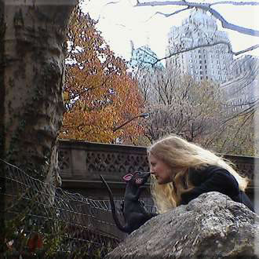

Welcome to my world. Please join me to visit, explore, imagine and experience the places I have created. Explore this website to find information about who I am and a little about my works.

Here’s a picture of me with a rat in Central Park. If you’ve read my fantasy series, The Underland Chronicles, you will have a clue as to why I chose this photo. If not, you may want to click on the little rat to find out a more about that series.
If the underworld of New York City does not intrigue you, then follow the bird to a world where 12 boys and 12 girls are forced to appear in a live TV show. In a dark vision of the near future there is only one rule; KILL or BE KILLED!